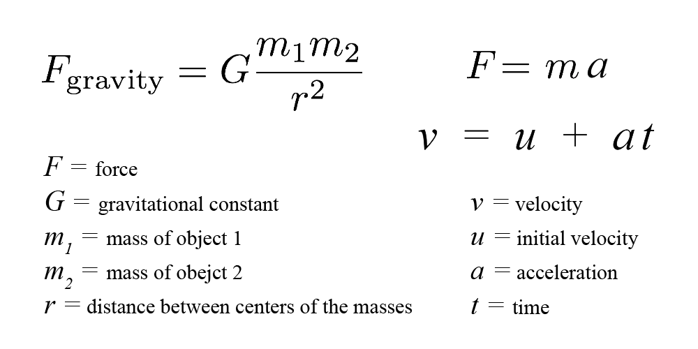

Welcome to Gravity Simulation Tool!
This tool makes use of real-world physics equations of gravity, force and motion to simulate how celestial objects move and interact with each other.
Placing Objects
There are two types of objects, Planets and Stars. You can select the desired object on the top right.
To place an object, simply click on the screen. Clicking on top of a pre-existing object will select it, allowing you to drag it across the canvas and/or change its attributes.
Selected objects can be deleted by clicking on the trash icon.
Object Types - Planets
Planets are dynamic objects that can be fully customized. When simulating, they will move based on their individual attributes as well as the influence of other objects present in the scene. Their path can be previewed before starting the simulation and potential collisions are displayed accordingly.
A planet's attributes can be controlled by a side menu located at the top right, next to "Place Object". It consist of:
Color: Controls the color of the planet.
Mass: Assigns a value for the planet's mass.
Radius: Controls the radius, and thus overall size.
Initial Velocity X: Assigns an initial velocity in the horizontal axis (positive values translate to right, negative translate to left).
Initial Velocity Y: Assigns an initial velocity in the vertical axis (positive values translate to down, negative translate to up).
Object Types - Stars
Stars are static objects that can also be placed in the scene. Unliked planets, they do not move when simulating and their mass is already set to a large and immutable value by default.
Understanding the Math (Optional)
While not a necessity, understanding the equations behind the code can make it much easier to use this tool. The position of each planet is simply dictated by its velocity at any given time. Additionally, its velocity is influenced by the forces acting upon it.

The values of constants and variables are adjusted by default to provide a better experience and smoother visualization.
Advanced Settings
As previously mentioned, some settings were manually adjusted to allow the simulation to run adequately. However, these can be altered to your liking with a dropdown menu located at the top left. Nevertheless, it is not recommended changing the following values without comprehending their purpose.
Gravitational Constant: Assigns the value of "G" for the "Force of Gravity" equation (even though the real-world value of this constant is very small, larger values usually wield better results).
Velocity Multiplier: Adjusts the overall velocity of all planets.
Preview Iterations: Dictates how further into the future the tool will be able preview the path for each planet. Decreasing this value is recommended you have many objects placed at the same time (Warning, on the other hand, setting this to a very high value can cause major issues such as crashing).
Stars Lighting: Allows you to disable shadow and lighting effects when stars are present, improving performance.
Simulating
The buttons located at the top center are the main controls for the simulation.
SIMULATE
Simulate will start the simulation and allow planets to move.
STOP
Stop will stop the simulation and return all objects to the state before the simulation began.
CLEAR
Clear will delete all objects and reset the simulation.
Presets
Instead of creating your own system, you can also choose from a list of preset templates. These templates offer intriguing and amusing visualizations of solutions to the n-body problem.
To toggle Presets, click on the button located at the top left.
PRESETS
Warning, selecting an item from the list will clear the canvas and erase any previous alterations or currently placed objects.
Most Importantly, Have Fun!
Last but not least, enjoy messing with different settings and configurations. The best way to learn is by playing around :)
Challenge yourself to create interesting orbits while avoiding collisions or planets shooting off into the distance.
If you would like to take a look at the source code for this project, it can be found in my github.